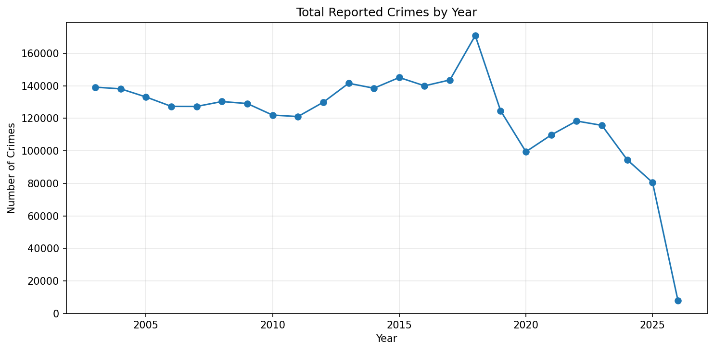

Exploring patterns in San Francisco crime data using interactive visualizations.
A static matplotlib visualization showing how crime changes over time.
Open Figure →
An interactive Plotly chart showing trends for selected crime categories.
Open Interactive Chart →